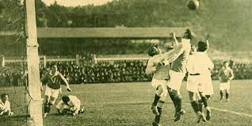

Reseña del futbol chileno

El fútbol desembarcó en Valparaíso a fines del siglo XIX, época en que los marinos e inmigrantes ingleses impresionaban a los porteños con apasionantes juegos en malecones y potreros. ... Sin duda el más importante de los formados en la década del veinte, por su devenir histórico, fue el club de fútbol Colo-Colo.